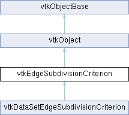

|
Etrek
|
|
Etrek
|
how to decide whether a linear approximation to nonlinear geometry or field should be subdivided More...
#include <vtkEdgeSubdivisionCriterion.h>

Public Member Functions | |
| vtkTypeMacro (vtkEdgeSubdivisionCriterion, vtkObject) | |
| void | PrintSelf (ostream &os, vtkIndent indent) override |
| virtual bool | EvaluateLocationAndFields (double *p1, int field_start)=0 |
| virtual int | PassField (int sourceId, int sourceSize, vtkStreamingTessellator *t) |
| virtual void | ResetFieldList () |
| virtual bool | DontPassField (int sourceId, vtkStreamingTessellator *t) |
| const int * | GetFieldIds () const |
| const int * | GetFieldOffsets () const |
| int | GetOutputField (int fieldId) const |
| int | GetNumberOfFields () const |
| Public Member Functions inherited from vtkObject | |
| vtkBaseTypeMacro (vtkObject, vtkObjectBase) | |
| virtual void | DebugOn () |
| virtual void | DebugOff () |
| bool | GetDebug () |
| void | SetDebug (bool debugFlag) |
| virtual void | Modified () |
| virtual vtkMTimeType | GetMTime () |
| void | PrintSelf (ostream &os, vtkIndent indent) override |
| void | RemoveObserver (unsigned long tag) |
| void | RemoveObservers (unsigned long event) |
| void | RemoveObservers (const char *event) |
| void | RemoveAllObservers () |
| vtkTypeBool | HasObserver (unsigned long event) |
| vtkTypeBool | HasObserver (const char *event) |
| vtkTypeBool | InvokeEvent (unsigned long event) |
| vtkTypeBool | InvokeEvent (const char *event) |
| std::string | GetObjectDescription () const override |
| unsigned long | AddObserver (unsigned long event, vtkCommand *, float priority=0.0f) |
| unsigned long | AddObserver (const char *event, vtkCommand *, float priority=0.0f) |
| vtkCommand * | GetCommand (unsigned long tag) |
| void | RemoveObserver (vtkCommand *) |
| void | RemoveObservers (unsigned long event, vtkCommand *) |
| void | RemoveObservers (const char *event, vtkCommand *) |
| vtkTypeBool | HasObserver (unsigned long event, vtkCommand *) |
| vtkTypeBool | HasObserver (const char *event, vtkCommand *) |
| template<class U, class T> | |
| unsigned long | AddObserver (unsigned long event, U observer, void(T::*callback)(), float priority=0.0f) |
| template<class U, class T> | |
| unsigned long | AddObserver (unsigned long event, U observer, void(T::*callback)(vtkObject *, unsigned long, void *), float priority=0.0f) |
| template<class U, class T> | |
| unsigned long | AddObserver (unsigned long event, U observer, bool(T::*callback)(vtkObject *, unsigned long, void *), float priority=0.0f) |
| vtkTypeBool | InvokeEvent (unsigned long event, void *callData) |
| vtkTypeBool | InvokeEvent (const char *event, void *callData) |
| virtual void | SetObjectName (const std::string &objectName) |
| virtual std::string | GetObjectName () const |
| Public Member Functions inherited from vtkObjectBase | |
| const char * | GetClassName () const |
| virtual vtkTypeBool | IsA (const char *name) |
| virtual vtkIdType | GetNumberOfGenerationsFromBase (const char *name) |
| virtual void | Delete () |
| virtual void | FastDelete () |
| void | InitializeObjectBase () |
| void | Print (ostream &os) |
| void | Register (vtkObjectBase *o) |
| virtual void | UnRegister (vtkObjectBase *o) |
| int | GetReferenceCount () |
| void | SetReferenceCount (int) |
| bool | GetIsInMemkind () const |
| virtual void | PrintHeader (ostream &os, vtkIndent indent) |
| virtual void | PrintTrailer (ostream &os, vtkIndent indent) |
| virtual bool | UsesGarbageCollector () const |
Protected Member Functions | |
| bool | ViewDependentEval (const double *p0, double *p1, double *p1_actual, const double *p2, int field_start, vtkMatrix4x4 *viewtrans, const double *pixelSize, double allowableChordErr) const |
| bool | FixedFieldErrorEval (double *p1, double *p1_actual, int field_start, int field_criteria, double *allowableFieldErr) const |
| Protected Member Functions inherited from vtkObject | |
| void | RegisterInternal (vtkObjectBase *, vtkTypeBool check) override |
| void | UnRegisterInternal (vtkObjectBase *, vtkTypeBool check) override |
| void | InternalGrabFocus (vtkCommand *mouseEvents, vtkCommand *keypressEvents=nullptr) |
| void | InternalReleaseFocus () |
| Protected Member Functions inherited from vtkObjectBase | |
| virtual void | ReportReferences (vtkGarbageCollector *) |
| vtkObjectBase (const vtkObjectBase &) | |
| void | operator= (const vtkObjectBase &) |
Protected Attributes | |
| int * | FieldIds |
| int * | FieldOffsets |
| int | NumberOfFields |
| Protected Attributes inherited from vtkObject | |
| bool | Debug |
| vtkTimeStamp | MTime |
| vtkSubjectHelper * | SubjectHelper |
| std::string | ObjectName |
| Protected Attributes inherited from vtkObjectBase | |
| std::atomic< int32_t > | ReferenceCount |
| vtkWeakPointerBase ** | WeakPointers |
Additional Inherited Members | |
| Static Public Member Functions inherited from vtkObject | |
| static vtkObject * | New () |
| static void | BreakOnError () |
| static void | SetGlobalWarningDisplay (vtkTypeBool val) |
| static void | GlobalWarningDisplayOn () |
| static void | GlobalWarningDisplayOff () |
| static vtkTypeBool | GetGlobalWarningDisplay () |
| Static Public Member Functions inherited from vtkObjectBase | |
| static vtkTypeBool | IsTypeOf (const char *name) |
| static vtkIdType | GetNumberOfGenerationsFromBaseType (const char *name) |
| static vtkObjectBase * | New () |
| static void | SetMemkindDirectory (const char *directoryname) |
| static bool | GetUsingMemkind () |
| Static Protected Member Functions inherited from vtkObjectBase | |
| static vtkMallocingFunction | GetCurrentMallocFunction () |
| static vtkReallocingFunction | GetCurrentReallocFunction () |
| static vtkFreeingFunction | GetCurrentFreeFunction () |
| static vtkFreeingFunction | GetAlternateFreeFunction () |
how to decide whether a linear approximation to nonlinear geometry or field should be subdivided
Descendants of this abstract class are used to decide whether a piecewise linear approximation (triangles, lines, ... ) to some nonlinear geometry should be subdivided. This decision may be based on an absolute error metric (chord error) or on some view-dependent metric (chord error compared to device resolution) or on some abstract metric (color error). Or anything else, really. Just so long as you implement the EvaluateLocationAndFields member, all will be well.
|
virtual |
This does the opposite of PassField(); it removes a field from the output (assuming the field was set to be passed). Returns true if any action was taken, false otherwise.
|
pure virtual |
You must implement this member function in a subclass. It will be called by vtkStreamingTessellator for each edge in each primitive that vtkStreamingTessellator generates.
Implemented in vtkDataSetEdgeSubdivisionCriterion.
|
protected |
Perform the core logic for a fixed multi-criterion, scalar-field based subdivision. Returns true if subdivision should occur, false otherwise. This is to be used by subclasses once the mesh-specific evaluation routines have been called to get the actual (as opposed to linearly interpolated) midpoint geometry and field values. Only field values are tested (not geometry) because you can save yourself field evaluations if you check the geometry yourself and it fails the test.
| p1 | is the linearly interpolated midpoint of the edge |
| p1_actual | is the actual midpoint of the edge |
| field_start | is the offset into the above arrays indicating where the scalar field values start (when isosurfacing, the embedding dimension may be smaller than the number of parametric coordinates). |
| field_criteria | is a bitfield specifying which fields (of the fields specified by PassField or PassFields) are to be considered for subdivision. Thus, you may pass fields to the output mesh without using them as subdivision criteria. In than case, the allowableFieldErr will have an empty entry for those fields. |
| allowableFieldErr | is an array of tolerances, one for each field passed to the output. If the linearly interpolated and actual midpoint values for any field are greater than the value specified here, the member will return true. |
|
inline |
Return the map from output field id to input field ids. That is, field i of any output vertex from vtkStreamingTessellator will be associated with GetFieldIds()[i] on the input mesh.
|
inline |
Return the offset into an output vertex array of all fields. That is, field i of any output vertex, p, from vtkStreamingTessellator will have its first entry at p[GetFieldOffsets()[i] ] .
|
inline |
Return the number of fields being evaluated at each output vertex. This is the length of the arrays returned by GetFieldIds() and GetFieldOffsets().
| int vtkEdgeSubdivisionCriterion::GetOutputField | ( | int | fieldId | ) | const |
Return the output ID of an input field. Returns -1 if fieldId is not set to be passed to the output.
|
virtual |
This is a helper routine called by PassFields() which you may also call directly; it adds sourceSize to the size of the output vertex field values. The offset of the sourceId field in the output vertex array is returned. -1 is returned if sourceSize would force the output to have more than vtkStreamingTessellator::MaxFieldSize field values per vertex.
|
overridevirtual |
Methods invoked by print to print information about the object including superclasses. Typically not called by the user (use Print() instead) but used in the hierarchical print process to combine the output of several classes.
Reimplemented from vtkObjectBase.
|
virtual |
Don't pass any field values in the vertex pointer. This is used to reset the list of fields to pass after a successful run of vtkStreamingTessellator.
|
protected |
Perform the core logic for a view-dependent subdivision. Returns true if subdivision should occur, false otherwise. This is to be used by subclasses once the mesh-specific evaluation routines have been called to get the actual (as opposed to linearly interpolated) midpoint coordinates. Currently, this handles only geometry, but could conceivably test scalar fields as well.
| p0 | is the first endpoint of the edge |
| p1 | is the linearly interpolated midpoint of the edge |
| p1_actual | is the actual midpoint of the edge |
| p2 | is the second endpoint of the edge |
| field_start | is the offset into the above arrays indicating where the scalar field values start (when isosurfacing, the embedding dimension may be smaller than the number of parametric coordinates). |
| viewtrans | is the viewing transform (from model to screen coordinates). Applying this transform to p0, p1, etc., should yield screen-space coordinates. |
| pixelSize | is the width and height of a pixel in screen space coordinates. |
| allowableChordErr | is the maximum allowable distance between p1 and p1_actual, in multiples of pixelSize, before subdivision will occur. |